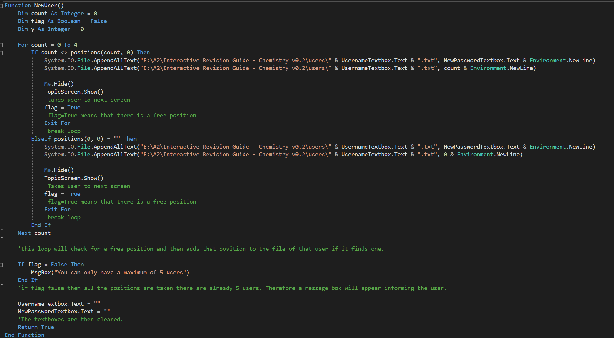
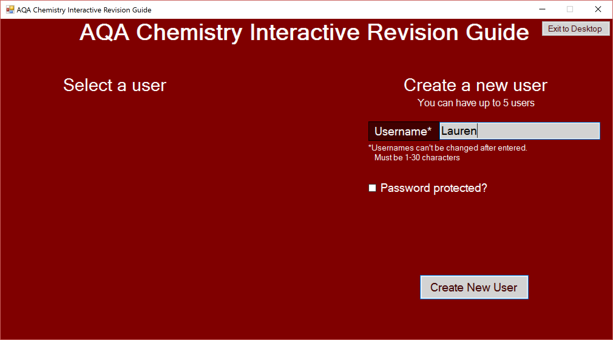

Go back
Interactive Chemistry Revision Guide
As my A-Level Computer Science Project, I chose to create an interactive revision guide for A-Level Chemistry. At the time, for the chemistry course I was doing, there weren’t many sources of revision material and even less that were interactive. Therefore, using Visual Studio 2015, I created an interactive revision guide which tests users on AS Level Chemistry. It tests users using multiple choice questions for each topic, which the user chooses from. The program stores their results locally on their computer and uses them to identify the user’s strong and weak spots and adapts to help improve them. In order to differentiate between the users, there are logins. It also provides the users with websites which are valuable to the chemistry course they are following, along with data and formulae which they will need.
Skills Gained
- Communication - I interviewed students and teachers of chemistry and got requirements for my program from them. I had to keep in contact with them so that I could inform them of alternate methods I had to use for the program. I also gave them prototypes to test, so I could receive feedback.
- Time Management - I had to build this program in 3 months, in my own time, as I also had to learn the exam material for Computer Science. I had to work around revision for my A-Level courses.
- Planning - I created top-down designs for my program, before programming it, as this allowed me to know exactly how my program would work; therefore saving me time.
- Research - I was not sure how to code file handling in Visual Basic, therefore I had to research how to do it. I also researched other types of revision guides, so that I could use them as inspiration for the design.
- Programming - Whilst programming this project, I learnt new skills and methods of doing things in Visual Basic.

